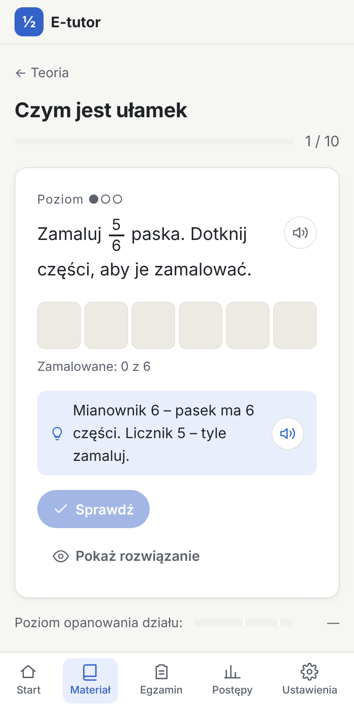
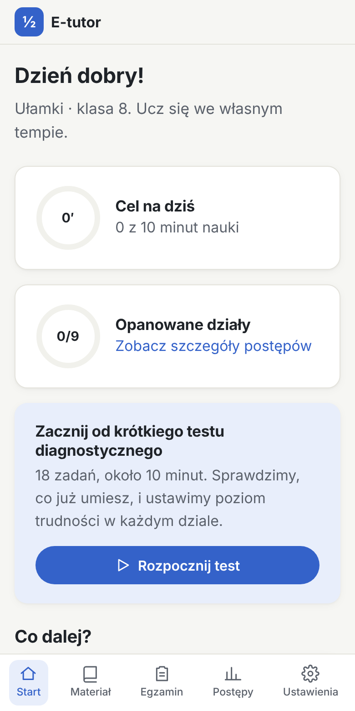
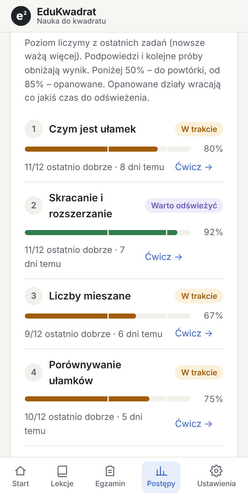
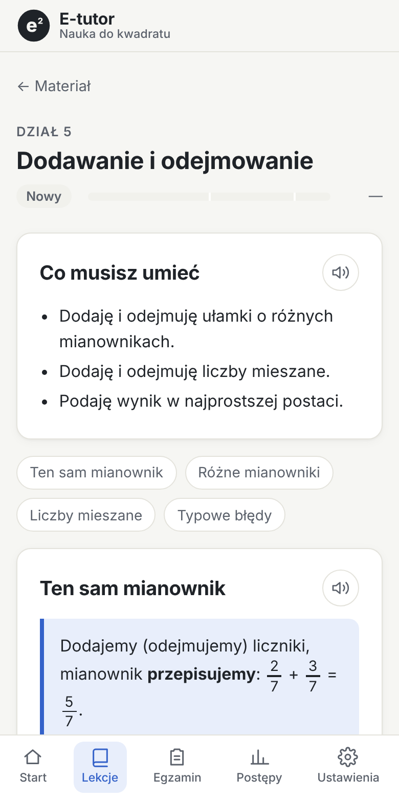

Egzamin ósmoklasisty · matematyka
Matematyka do egzaminu po 10 minut dziennie.
EduKwadrat daje dziecku zadania na jego poziomie, prowadzi przez rozwiązanie podpowiedziami i pokazuje, który dział trzeba powtórzyć. Ułamki można wypróbować za darmo już teraz.
Matematyka: wtorek, 11 maja 2027, godz. 9:00 do egzaminu: 24 tygodnie

Jak wygląda nauka
Najpierw krótki test (ok. 10 minut), potem codzienne zadania i powtórki
-
Krótki test na start
18 zadań, około 10 minut. Test ustawia poziom trudności osobno w każdym dziale.
-
Zadania na właściwym poziomie
Zadania generują się same, więc nigdy się nie kończą. Przy błędzie aplikacja mówi, co poszło źle, np. „dodano mianowniki”.
-
Powtórki, zanim coś się zapomni
Opanowany dział wraca do odświeżenia po 2, 4, 7, 14, 30 i 60 dniach.

Postępy
Procent opanowania przy każdym dziale
Wynik liczymy z ostatnich 12 zadań w dziale. Podpowiedzi i kolejne próby go obniżają, a same łatwe zadania nie wystarczą do zaliczenia działu.


Teoria
Teorię można przeczytać albo odsłuchać, a ułamki sprawdzić na modelach
Każdy dział zaczyna się od listy „Co musisz umieć”, reguł z rysunkami, przykładów z rozwiązaniem i typowych błędów.
- 7 interaktywnych modeli: pasek, oś liczbowa, siatka 10×10
- Lektor czyta teorię i zadania, także ułamki („trzy czwarte”)
- Czcionka OpenDyslexic, wysoki kontrast i większy tekst w ustawieniach
- Działa w przeglądarce na telefonie i komputerze, jest też aplikacja na Androida
Spis treści
Działy i tematy
10 działów egzaminu, w każdym ok. 100 lekcji: teoria, przykład krok po kroku, ćwiczenia, trudniejsze zadania i sprawdzian.
Ułamkigotowe
- 1.Czym jest ułamek, oś liczbowa
- 2.Skracanie i rozszerzanie
- 3.Liczby mieszane
- 4.Porównywanie ułamków
- 5.Dodawanie i odejmowanie
- 6.Mnożenie i dzielenie
- 7.Ułamki dziesiętne, też okresowe
- 8.Kolejność działań
- 9.Zadania tekstowe
Do tego test diagnostyczny i próbny arkusz w stylu egzaminu.
Pozostałe działygotowe
- 10.Liczby i działania, podzielność
- 11.Procenty
- 12.Potęgi i pierwiastki
- 13.Wyrażenia algebraiczne
- 14.Równania, proporcje, prędkość
- 15.Geometria płaska
- 16.Pitagoras i układ współrzędnych
- 17.Graniastosłupy i ostrosłupy
- 18.Statystyka i prawdopodobieństwo
- +Konto i postępy na każdym urządzeniuw przygotowaniu
- +Cotygodniowy raport dla rodzica e-mailemw przygotowaniu
Porównanie
Na co dzień zamiast dodatkowej godziny korepetycji
EduKwadrat uzupełnia lekcje z nauczycielem: dziecko ćwiczy codziennie, także między lekcjami.
| Korepetycje | EduKwadrat, pełna wersja | |
|---|---|---|
| Koszt | zwykle 80–150 zł za godzinę | 99 zł za cały sezon do egzaminu |
| Kiedy | w umówionym terminie | kiedy dziecko ma 10 minut |
| Liczba zadań | tyle, ile zmieści się w lekcji | bez limitu, generowane na bieżąco |
| Co widzi rodzic | to, co powie nauczyciel | procent opanowania każdego działu |
Przedsprzedaż sezonu 2026/27
Jedna opłata za dostęp do wszystkich działów do dnia egzaminu, 11 maja 2027. Teraz nic nie płacisz. Zostaw e-mail, a gdy ruszy pełna wersja, dostaniesz link do zakupu w cenie 99 zł.
- Wszystkie 10 działów egzaminu, ponad 1000 lekcji
- Próbne arkusze i raport dla rodzica
- Ułamki zostają za darmo, także bez zapisu
Pytania
Zanim się zapiszesz
Gdzie są opinie innych rodziców?
Jeszcze ich nie mamy, bo strona i aplikacja są nowe. Ułamki są za darmo: niech dziecko spróbuje przez tydzień, a Ty zobacz postępy.
Dla kogo jest EduKwadrat?
Dla uczniów 7. i 8. klasy, którzy przygotowują się do egzaminu ósmoklasisty z matematyki. Starsi uczniowie mogą nim powtórzyć materiał przed liceum.
Czy trzeba zakładać konto?
Teraz nie. Postępy zapisują się w przeglądarce na urządzeniu dziecka. W pełnej wersji dojdzie konto, żeby postępy były na każdym urządzeniu, a rodzic dostawał raport.
Kiedy i ile zapłacę?
Teraz nic. Gdy pełna wersja będzie gotowa, wyślemy e-mail z linkiem do zakupu w cenie 99 zł. Jeśli nie kupisz, nic się nie dzieje.
Czy to działa na telefonie?
Tak. Aplikacja działa w przeglądarce na telefonie, tablecie i komputerze. Na telefonach pojawia się klawiatura do wpisywania ułamków. Jest też wersja na Androida.